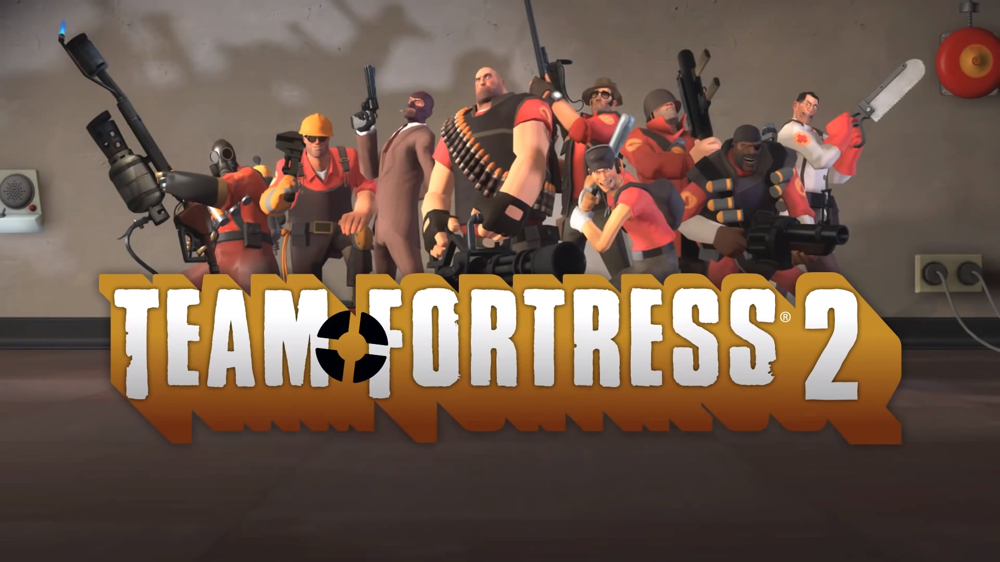

Welcome to TF2
Released in 2007, TF2 has been cosistently updated and changed. It has grown into one of the largest free-to-play games, and is driven greatly by its community. Many of the updates have been either voted on by the community, inspired by community ideas, or featured content made entirely by community members.
The game features 9 distinct classes in a red vs blue format. Players in a server of up to 24 can pick any combination of classes to win. There are very many game types and maps that change the way you play.